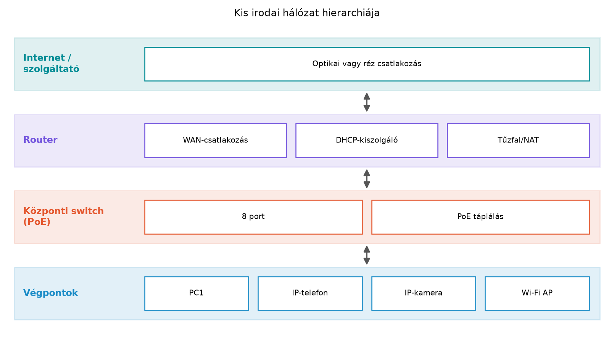

Az irodai alkalmazások mellett a mai villanyszerelő egyre gyakrabban találkozik számítógép-hálózatokkal: egy lakásfelújításnál a megszokott erősáramú körök mellé UTP-kábelt húznak az IP-kamera, a Wi-Fi átjátszó, az okosmérő vagy a klímavezérlő számára. Egy ipari csarnokban a PLC, a frekvenciaváltó és a karbantartó laptopja gyakran ugyanazon a hálózaton, de más-más hálózati szegmensben kommunikál. Aki tudja, mi a különbség egy router és egy switch között, hogyan kell bekötni egy RJ45-csatlakozót, és miért nem éri el az eszköz az átjárót, az nemcsak hibát talál, hanem a gyengeáramú rendszert is úgy tervezi, hogy az ne zavarja, és ne őt hívják vissza.
Ebben az alfejezetben a hálózati alapfogalmakat, a kábelezést és az épületautomatikai összefüggést tanuljuk meg. A fizikai elvek, a csatlakozók és a címzés ismerete később is előjön, amikor KNX- vagy DALI-rendszert telepítünk, illetve amikor egy vezérlőberendezés HMI-kijelzőjét hálózatra kötjük.
A gyakorlatban szinte mindig csillag topológiát látunk: a végpontok (PC, nyomtató, kamera, access point) külön-külön kábelen csatlakoznak egy központi kapcsolóhoz (switch), a switch pedig a routerhez. A régebbi busz- és gyűrűs topológiák ma már legfeljebb ipari redundáns hálózatokban vagy régi dokumentációkban érdekesek, de a megértésük hasznos: busz esetén az eszközök egyetlen közös kábelre csatlakoznak, gyűrű esetén az utolsó eszköz visszacsatlakozik az elsőhöz.
Definíció. A hálózati topológia az eszközök logikai és fizikai összekapcsolásának elrendezése. A nagyméretű hálózatokban a csillag topológiákat hierarchikusan egymás fölé épített fa topológia alkotja: munkahelyi aljzatok → emeleti elosztó switch → épületközi gerinchálózat → központi router.
Az alábbi rétegábra egy kis iroda tipikus hálózati hierarchiáját szemlélteti.

A fa topológia előnye, hogy egyetlen kábel meghibásodása általában csak egy végpontot érint, és a hibakeresés rétegről rétegre haladhat.
Amikor egy készülék csatlakozik a hálózathoz, általában automatikusan kap IP-címet egy DHCP-kiszolgálótól. A villanyszerelőnek mégis ismernie kell a statikus címzés alapjait, mert az épületautomatikai eszközök, kamerák, PLC-k és frekvenciaváltók gyakran fix IP-címet igényelnek.
Definíció. Az IPv4-cím egy 32 bites
szám, amelyet négy, ponttal elválasztott, 0 és 255 közötti decimális
számként írunk, például 192.168.1.37. Az IP-cím két részre
oszlik: a hálózati cím azonosítja a hálózatot, a
hosztcím az egyes készüléket ezen a hálózaton.
Definíció. A hálózati maszk (subnet
mask) azt mondja meg, hogy az IP-címből hány bit tartozik a hálózat
azonosításához. Az írásmód lehet hagyományos, például
255.255.255.0, vagy rövidített, például /24. A
/24 azt jelenti, hogy a balról számított első 24 bit a
hálózat, a maradék 8 bit a hoszt.
Szabály. Egy IP-címből a hálózati címet az IP-cím és a maszk bitenkénti logikai ÉS műveletével kapjuk meg. Az alapértelmezett átjáró (gateway) az a készülék, általában router, amelyen keresztül az adott hálózat gépei a más hálózatok felé forgalmaznak. Egy hálózatnak minden eszköze ugyanabban a hálózati tartományban kell legyen, és az átjárónak is ebben a tartományban kell lennie.
Példa. Legyen a készülék IP-címe
192.168.1.37/24, az átjáró 192.168.1.1. A
maszk 255.255.255.0. A bitenkénti ÉS művelet:
192.168.1.37 →
11000000.10101000.00000001.00100101255.255.255.0 →
11111111.11111111.11111111.0000000011000000.10101000.00000001.00000000 =
192.168.1.0Tehát a hálózati cím 192.168.1.0. A hálózatban a hosztok
a 192.168.1.1 – 192.168.1.254 tartományt
használhatják, a 192.168.1.255 a
broadcast-cím, amely minden készülékhez szól. A
használható hosztok számát a maszk határozza meg:
ahol
a maszk hossza, például /24 esetén
.
A kettőt a hálózati cím és a broadcast-cím miatt vonjuk le.
Szabály. A magánhálózatokban gyakran használt
tartományok: 10.0.0.0/8, 172.16.0.0/12 és
192.168.0.0/16. A nyilvános interneten ezek a címek nem
útválaszthatók, ezért a router NAT-ot (hálózati
címfordítás) végez, amikor a magánhálózati készülék az internethez
fordul.
A DNS-kiszolgáló a neveket (például
www.iroda.hu) IP-címre fordítja; az átjáró mellett a DNS-t
is be kell állítani, ha nem DHCP-t használunk.
A lokalizált hálózati kábelezés leggyakrabban csavart réz érpárokat használ. A UTP (árnyékolatlan csavart érpár) 4 párt, összesen 8 eret tartalmaz; a párok csavarása a külső zavarokkal szembeni védelmet szolgálja. Az FTP kábel ezen felül fóliaárnyékolást is kap. A kategóriák a sebességet és a maximális hosszt befolyásolják: a Cat5e általában 1 Gbit/s sebességig, a Cat6 rövid távon 10 Gbit/s-ig, a Cat6a 100 méteren is 10 Gbit/s-ig alkalmas. (ellenőrizendő: aktuális szabvány/gyártói adatlap)
Szabvány. A strukturált hálózati kábelezésre az ISO/IEC 11801 sorozat és az ezzel harmonizált európai szabvány vonatkozik (ellenőrizendő: aktuális kiadás). Az állandó link (permanent link, a patchpanel és a fali aljzat közötti fix kábel) legfeljebb 90 m, a csatorna (channel) a két patchkábellel együtt legfeljebb 100 m. A szerelőnek ezt a hosszat nem szabad túllépnie, és a kábelre ható húzóerőt, hajlítási sugarat a gyártó adatai szerint kell betartani.
Szabály. Az erősáramú (230/400 V) és az adatkábeleket egymástól elválasztva vezetjük: közös kábelcsatornában csak elválasztó fallal, közös szerelvénydobozban csak elválasztott rekeszben; a minimális elválasztási távolság a kábelek típusától és az elválasztás módjától függ (ellenőrizendő: MSZ EN 50174-2, gyártói adatlap). Erősáramú vezeték nem kerülhet az adataljzat dobozába; ez biztonsági kérdés is (eltérő szigetelési szint), nem csak zavarvédelem. A 8 eres kábelt a 8P8C moduláris csatlakozóba (RJ45) kell bekötni. A gyakorlatban Magyarországon is a T568B színsorrend terjedt el. A színsorrend a csatlakozó érintkezői szerint, balról jobbra:
A T568A variáns az 1–2 és a 3–6 párokat cseréli fel; a hibaelhárítás során mindig azt kell ellenőrizni, hogy a kábel két végén ugyanazt a szabványt követik-e.
Eljárás. RJ45-csatlakozó bekötése T568B szerint:
A hálózati eszközök feladatát gyakran keverik, ezért érdemes pontosan meghatározni.
Definíció. A switch (kapcsoló) az azonos hálózaton belüli eszközöket kapcsolja össze, és a forgalmat a cél MAC-cím alapján portról portra irányítja. A switch nem végez útválasztást; a végpontok ugyanabba az IP-hálózatba tartoznak.
Definíció. A router (útválasztó) különböző hálózatok között irányítja a csomagokat, általában a helyi hálózat és az internet, vagy a helyi hálózat és egy felügyeleti hálózat között. A routeren fut a DHCP-kiszolgáló, a NAT és gyakran a tűzfal.
Definíció. A Wi-Fi vezeték nélküli helyi hálózatot hoz létre az IEEE 802.11 szabványcsalád alapján. A Wi-Fi AP (access point) általában egy routerbe vagy külön dobozba épül; az AP-t hálózati kábelen a switchhez kell kötni, ha nagyobb területet akarunk lefedni.
Definíció. A PoE (Power over Ethernet) tápellátást biztosít a hálózati kábelen keresztül az eszköznek. A szabványos típusok: IEEE 802.3af körülbelül 15,4 W, 802.3at körülbelül 30 W, 802.3bt körülbelül 60 W (Type 3) és 90 W (Type 4) a switch portján; a fogyasztóhoz a kábelveszteség után kevesebb jut (kb. 13 W, 25,5 W, 51 W, 71 W). (ellenőrizendő: IEEE 802.3, gyártói adatlap) A PoE feszültsége jellemzően 48 V egyenfeszültség; a tényleges teljesítményt a kábel hossza, a kategória és az eszköz igénye egyaránt befolyásolja.
Gyakorlati elv: a router WAN-portjára a szolgáltatótól érkező kábel kerül, a LAN-portjaira switch, PC vagy AP. Ha a hálózatban PoE kamera, IP-telefon vagy vezeték nélküli AP is van, célszerű PoE-képes switch-et választani, hogy ne kelljen külön tápegységet szerelni minden eszközhöz.
Az épületautomatikai rendszerek egy része önálló buszon működik
(például KNX TP, DALI vagy Modbus RTU), de a felügyeletük, programozásuk
és az egyes rendszerek közötti adatcsere egyre inkább IP-alapú hálózaton
történik. A KNX IP-interfészen, a DALI hálózati átjárón, a PLC pedig
Ethernet-porton keresztül kapcsolódik az épületfelügyelethez. A
szerelőnek ugyanazt kell tudnia: IP-cím beállítás, hálózati kábel
bekötése, hibakeresés a switch LED-jeivel és a parancssoros
ping ellenőrzéssel.
Továbbvitt eredmény. Az itt tanult hálózati ismereteket a KNX, DALI és más épületautomatikai rendszerek és a Vezérlőberendezések informatikai hálózatai és HMI alfejezetek használják fel: ugyanazt az IP-címzést, kábelezést és csillag topológiát látjuk vissza a buszos rendszerek felügyeleti oldalán.
Egy kis irodában a megrendelő IP-kamerát szeretett volna a bejárathoz. A szerelő behúzott egy 60 m hosszú UTP-kábelt, és a végét az irodában lévő PoE switchbe kötötte. A kamera nem indult el; a switch portján a LED világított, de a PoE-visszajelzés nem jött létre. A kábelteszter azt mutatta, hogy a 4. és 5. ér (a kék pár) megszakadt. A krimpeléskor az egyik ér a tehermentesítőnél megtört, és a feszes kötegelés a kábelt ennél a pontnál tovább húzta. 100 Mbit/s-os kapcsolatnál az adat az 1-2 és 3-6 érpáron halad, ezért a link LED világított; a switch azonban a kék és barna páron (B mód) adta volna a PoE-táplálást, így a kamera nem indult (ellenőrizendő: a switch PoE-módja). A csatlakozó ismételt elkészítése után a kamera megfelelően működött. A tanulság: a gyengeáramú hálózati hibák leggyakrabban nem az IP-címben, hanem a fizikai rétegben – a kábelben vagy a csatlakozóban – vannak.
Cél: Készítsünk egy 5 m hosszú UTP-kábelt RJ45-csatlakozóval a T568B szabvány szerint, és ellenőrizzük kábelteszterrel.
Eszközök és anyagok: UTP Cat5e vagy jobb minőségű kábel, RJ45-csatlakozó (csavart érpárhoz), lehúzó, krimpelő fogó, kábelteszter, jelölőcímke.
Biztonsági korlát. A feladat tanműhelyi (törpefeszültségű) környezetre vagy jogosult oktató felügyeletére vonatkozik; hálózati feszültségen önállóan ne végezd. Ha a hálózati eszköz 230 V-os táplálásához nyúlsz, azt csak jogosult személy kötheti le, a hatályos előírások szerint.
Az öt biztonsági szabályt itt is be kell tartani, ha a hálózati készülékek tápellátását vagy a környező erősáramú szerelést érintjük:
Lépések:
Ellenőrzési pontok:
Tipikus hibák a bekötés során:
Dokumentálás: A kész kábel mindkét végére azonos
jelölőcímkét helyezzünk el, például NET-001. A patchpanel
és a munkahelyi aljzat bekötésekor a rajzon tüntessük fel a kábel
azonosítóját és a hálózati eszköz portját.
T568A és T568B keverése. Ha az egyik vég T568A, a másik T568B, a kábel nem egyenes, hanem keresztezett. A mai eszközök egy része automatikusan kezeli, de a legrosszabb az, ha csak időszakosan működik. Mindig ellenőrizzük a két vég azonosságát.
Ipari hálózaton az eszköz IP-címe ütközik. Ha két PLC vagy kamera ugyanazt a statikus IP-címet kapja, a hálózat kiszámíthatatlanul viselkedik. A javítás: minden eszközhöz egyedi, a hálózati tartományba illeszkedő címet adjunk, és vezessünk címzési táblázatot.
90 m-nél hosszabb szakasz kábelből. A megrendelő spórol, és 110 m kábelt húzat be; az átvitel hibás vagy lassú lesz. A szabvány szerinti csatornahosszt be kell tartani, vagy aktív eszközt, optikai átalakítót kell beépíteni.
UTP a 230 V-os vezetékkel egy védőcsőben vagy közös dobozban. Elválasztás nélkül tilos; lásd az erősáramú és adatkábelek elválasztásáról szóló szabályt.
PoE eszköz túl nagy teljesítményt igényel. Egy 30 W-ot igénylő kamera egy 15,4 W-os PoE switch portra kötve nem fog indulni. A switch és a fogyasztó adatlapját mindig egyeztetni kell.
192.168.1.37/24
IP-cím esetén, és hány hoszt használható?1. feladat (A) Sorolj fel legalább három hálózati topológiát, és mondd meg, melyik a legelterjedtebb a modern Ethernet-hálózatokban.
2. feladat (A) Milyen eszközt használunk az azonos hálózaton belüli eszközök összekapcsolására, és melyik irányítja a hálózatok közötti forgalmat?
3. feladat (B) Egy eszköz IP-címe
172.16.5.100/20. Számítsd ki a hálózati címet, a
broadcast-címet, és határozd meg a használható hosztok számát.
4. feladat (B) Rajzold le vagy írd le egy kis iroda hálózatának bekötési tervét: szolgáltatói csatlakozás, router, 8 portos PoE switch, két PC, egy Wi-Fi AP és egy PoE IP-kamera.
5. feladat (C) Egy 8 portos PoE switch minden portja legfeljebb 15,4 W-tal táplál. A portokra csatlakoztatott eszközök: 4 kamera egyenként 7 W, 1 Wi-Fi AP 10 W, 3 IP-telefon egyenként 3 W. A switch teljes PoE-kerete 65 W. Elfér-e a rendszer a switch teljesítménykeretén belül? Indokold számítással, osztály szerinti foglalással is (IEEE 802.3af: 1. osztály 4,0 W, 2. osztály 7,0 W, 3. osztály 15,4 W a switch oldalán; a készüléknek 3,84 W, 6,49 W, illetve 12,95 W áll rendelkezésére).
6. feladat (D) Egy kábelteszter az 1–8 LED-ek közül a 3–6 párokat fordított sorrendben mutatja. Mi lehet a hiba, és hogyan javítanád?
1. feladat
Busz, gyűrű, csillag és fa topológia. A modern Ethernet-hálózatokban a csillag topológia a legelterjedtebb, amelyet nagyobb hálózatok esetén fa topológiává bővítenek.
2. feladat
Az azonos hálózaton belüli eszközöket switch köti össze; a hálózatok közötti forgalmat router irányítja.
3. feladat
Adott: IP-cím 172.16.5.100, maszk /20, azaz
255.255.240.0.
A maszkból: az első 20 bit hálózat, a maradék 12 bit hoszt. Az IP-cím binárisan:
172.16.5.100 →
10101100.00010000.00000101.0110010011111111.11111111.11110000.0000000010101100.00010000.00000000.00000000Visszaalakítva: 172.16.0.0, ez a hálózati
cím.
A broadcast-címhez a hosztbiteket 1-re állítjuk. A harmadik oktettben
a maszk utolsó 4 bitje a hoszt része: 0000 →
1111, tehát 172.16.15.255. A
broadcast-cím: 172.16.15.255.
A használható hosztok száma:
Tehát a tartomány 172.16.0.1 –
172.16.15.254.
4. feladat
A kapcsolási terv leírása:
5. feladat
A fogyasztók teljes igénye:
A switch teljes PoE-kerete 65 W, ez kisebb, mint a nyolc port névleges összege ( W), tehát a keretet kell a fogyasztók igényével összevetni.
Tényleges igény szerint a fogyasztók összesen 47 W-ot vesznek fel (kábelveszteséggel ennél kicsit többet). Osztály szerinti foglalásnál a switch a készülék PoE-osztályához rendel teljesítményt: a 7 W-ot igénylő kamera meghaladja a 2. osztály 6,49 W-os fogyasztói határát, ezért 3. osztályú, és 15,4 W-ot foglal; az AP is 3. osztályú (15,4 W); a 3 W-os telefon 1. osztályú (4,0 W). Az osztályos foglalás:
Válasz: osztály szerinti foglalással a rendszer nem fér el a 65 W-os keretben. Ha a switch és az eszközök LLDP-alapú (a tényleges igény szerinti) teljesítmény-egyeztetést támogatnak, a kb. 47 W igény és a kábelveszteség elférhet (ellenőrizendő: switch adatlapja, IEEE 802.3 osztályok). A példa azt tanítja, hogy nemcsak a portonkénti teljesítményt, hanem a készülék teljes PoE-keretét és a foglalási módot is ellenőrizni kell.
6. feladat
Ha a teszter 3→6 és 6→3 kapcsolatot mutat, az egyik végen a zöld pár két ere (zöld-fehér és zöld) fel van cserélve. T568A/B keveredésnél ezzel szemben az 1↔︎3 és 2↔︎6 keresztezés látszik (két pár cseréje). Javítás: bontsuk le a hibás csatlakozót, rendezzük az ereket mindkét végén T568B szerint, krimpeljük újra, és teszterrel ellenőrizzük, hogy az 1–8 LED-ek sorban, párban világítanak.
A számítógépes hálózatok a villanyszerelő munkájában a gyengeáramú
kábelezés, a felügyeleti rendszerek és az épületautomatika miatt
jelennek meg. A modern Ethernet-hálózatok csillag topológiájúak; az
eszközöket switch köti össze, a hálózatok közötti forgalmat router
irányítja. Az IPv4-cím a hálózati és hoszt részre oszlik; a maszk
(/24, 255.255.255.0) mutatja, hány bit a
hálózati rész. A hálózati címet IP-cím és maszk bitenkénti ÉS
műveletével kapjuk, a broadcast az összes hosztbitet 1-re állítva; a
használható hosztok száma
.
A UTP-kábel 4 csavart érpárból áll, az RJ45-csatlakozót leggyakrabban
T568B szerint krimpeljük. A PoE a hálózati kábelen
keresztül táplál készülékeket, ezért ellenőrizni kell a fogyasztó és a
switch teljesítményigényét. A hálózati ismeretek a KNX, DALI és más épületautomatikai rendszerek és a
Vezérlőberendezések informatikai hálózatai és
HMI alfejezetekben térnek vissza. Hálózati feszültségű hálózati
készülék táplálását csak jogosult személy végezheti; a szerelés előtt
mindig tartsuk be az öt biztonsági szabályt.